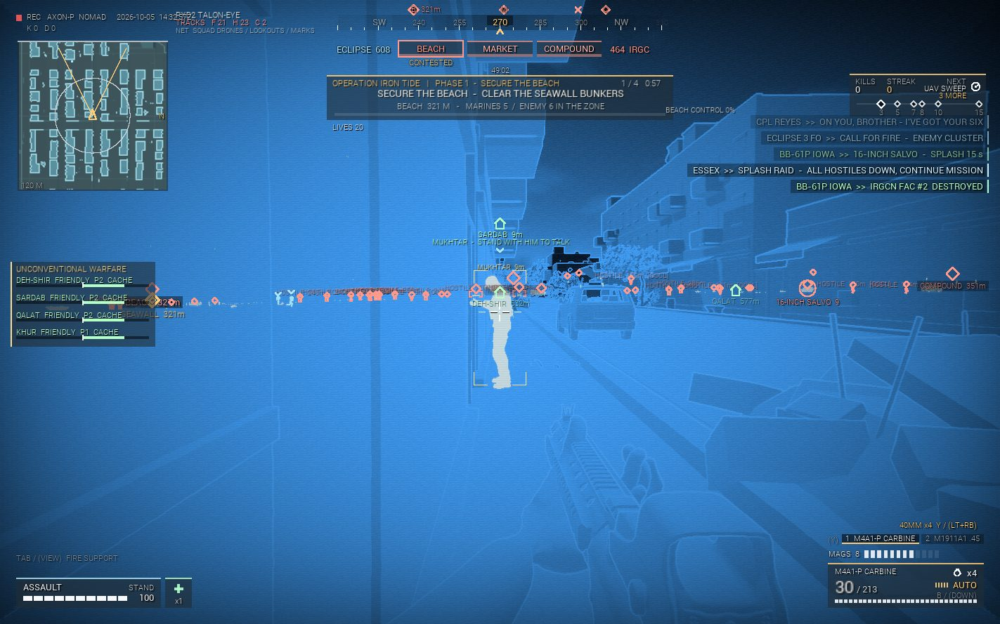
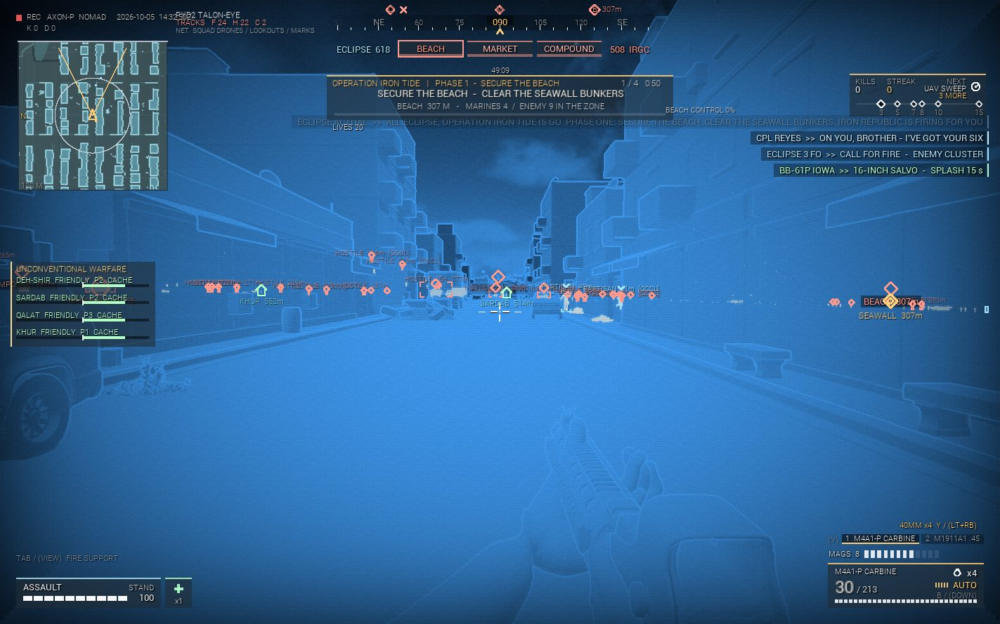
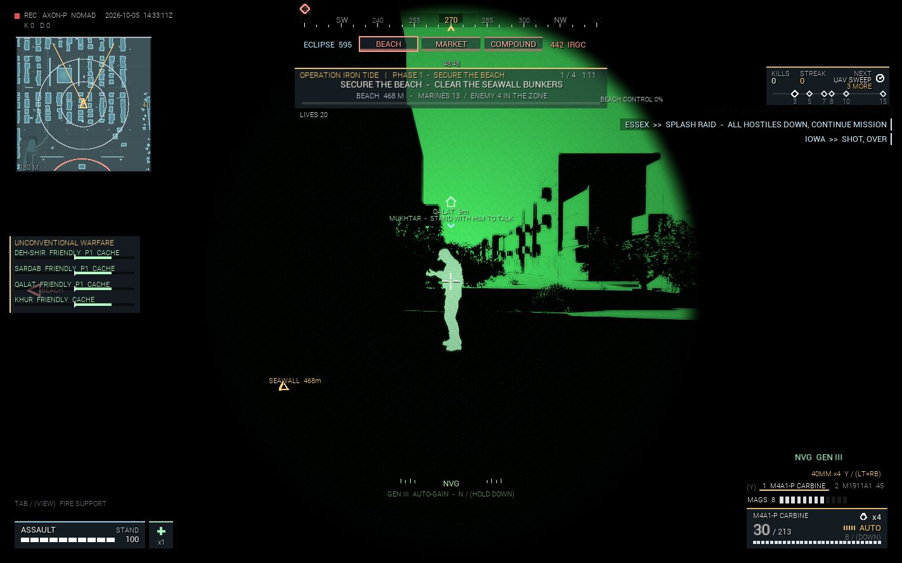
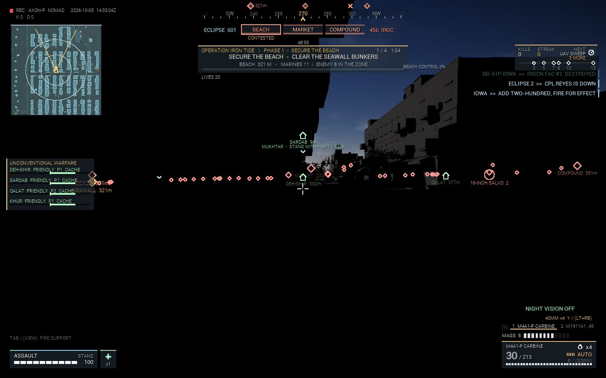
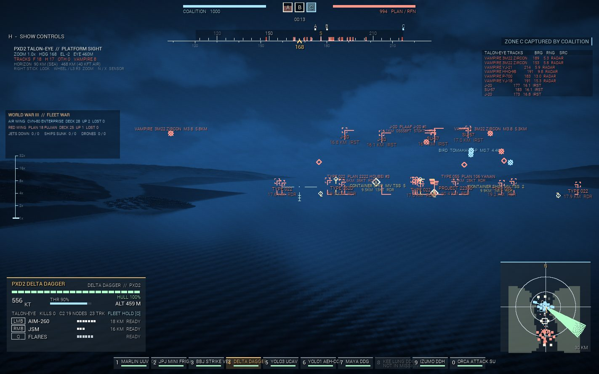
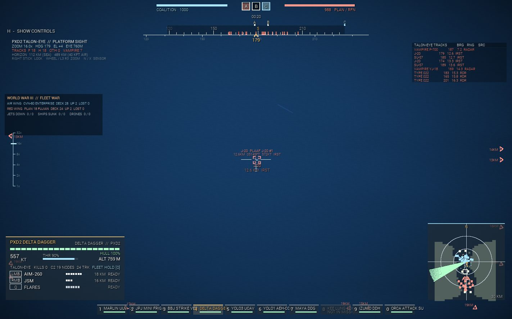
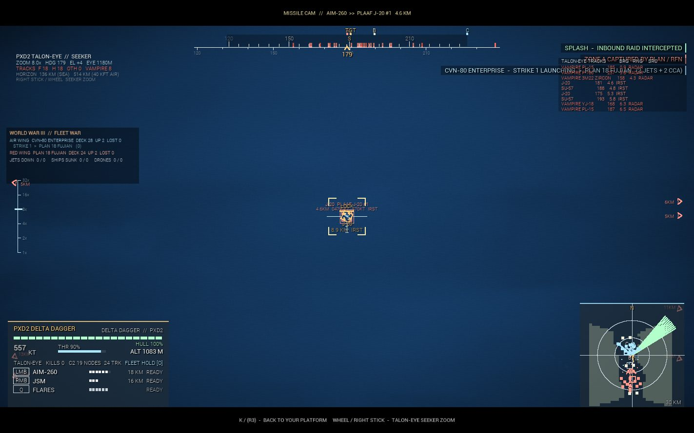
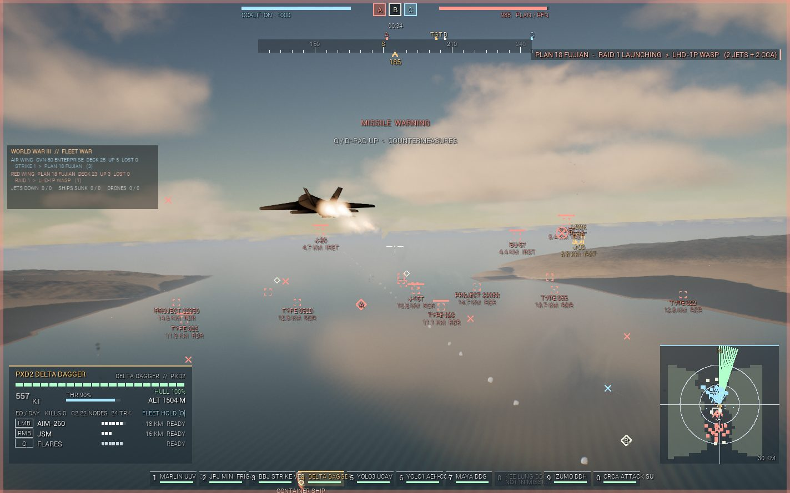

PXD2's first game, Global Theaters: Mud for Blood, launches on the Epic Games Store on January 1, 2027. Below is the trailer submitted to Epic, then the 30-second PXD2 spot showing the systems inside the game.
TALON-EYE is PXD2's own sighting system. In the game it runs on soldiers, jets, ships and missiles: see through walls, lock at range, ride the seeker in.








Full terms are in the Founding Partner Agreement (Plain-Language Edition).